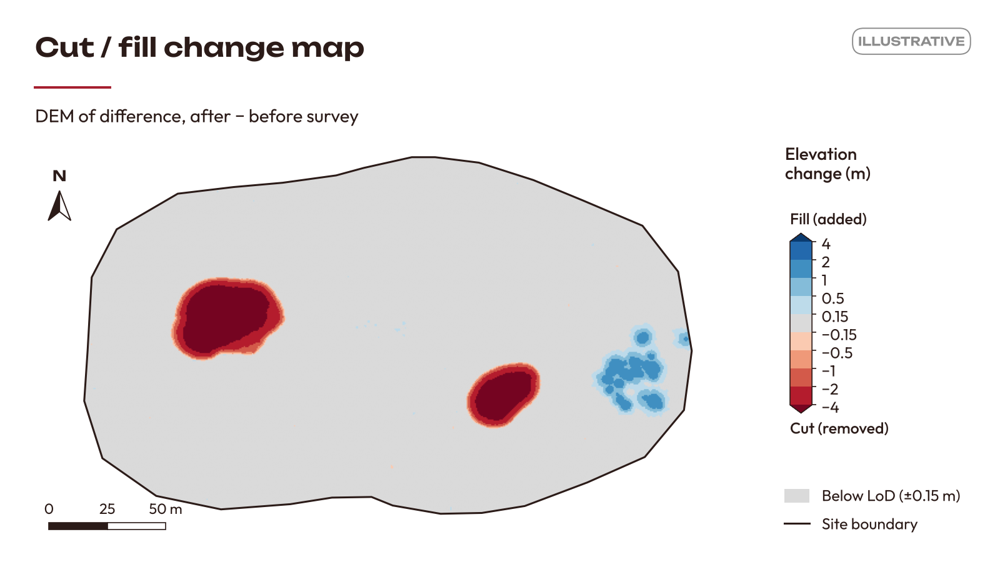

Core
01Removal verification with uncertainty
- Build a DEM for each survey from the point cloud.
- Compute the DEM of Difference per grid cell:
DoD = DEM(t₂) − DEM(t₁) - Estimate each survey’s vertical error from the checkpoints and combine them:
σ_DoD = √(σ₁² + σ₂²) - Apply a level of detection,
LoD95 = 1.96 × σ_DoD. Smaller changes are treated as noise. - Use spatially varying uncertainty: steep, rough or poorly covered cells get bigger error bars than flat cleared ground (after Las2DoD and James et al. 2017).
- Sum cut and fill separately to get removed and added volume, each with a confidence interval.
Volume to tonnage. Payment is per tonne, but drones measure volume. A density range (from weighbridge records or core samples) and the DEM error run together through a Monte Carlo simulation, so the output reads like:
41,200 t removed · 95% interval 38,900–43,600 t
Example of the output format
Why this is the contribution. Drone volume surveys of landfills are already common. Erosion and river researchers routinely report volume change with propagated uncertainty; bringing that discipline to payment verification on an active waste site is the new part.
